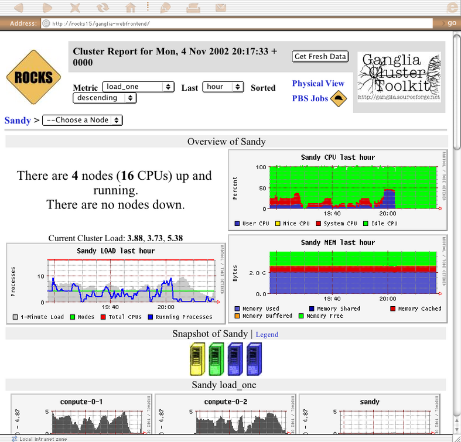
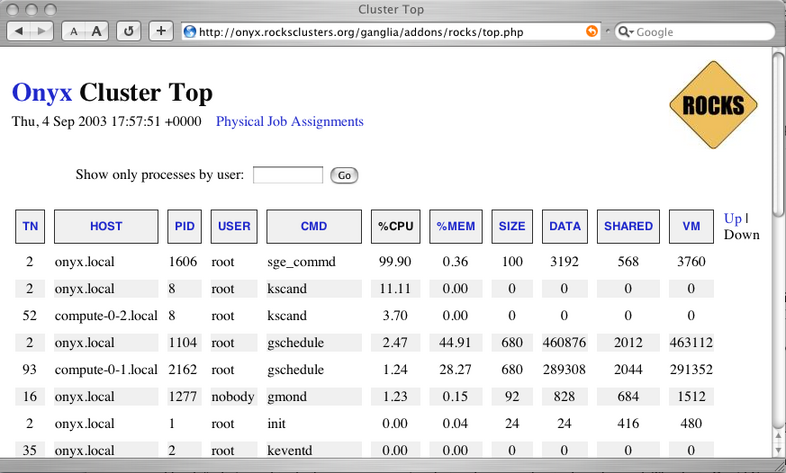

3.1. Using the Ganglia Roll
3.1.1. Cluster Status
The webpages available from this link provide a graphical interface to live cluster information provided by Ganglia monitors running on each cluster node. The monitors gather values for various metrics such as CPU load, free memory, disk usage, network I/O, operating system version, etc. These metrics are sent through the private cluster network and are used by the frontend node to generate the historical graphs.
In addition to metric parameters, a heartbeat message from each node is collected by the Ganglia monitors. When a number of heartbeats from any node are missed, this web page will declare it "dead". These dead nodes often have problems which require additional attention, and are marked with the Skull-and-Crossbones icon, or a red background.

 | The Rocks Cluster Group maintains a similar web page called Meta that collects Ganglia information from many clusters built with Rocks software. It may give you a glimpse of the power and scalability of the Ganglia monitors. The meta page is available at http://meta.rocksclusters.org/. |
Ganglia was designed at Berkeley by Matt Massie (massie@cs.berkeley.edu) in 2000, and is currently developed by an open source partnership between Berkeley, SDSC, and others. It is distributed through Sourceforge.net under the GPL software liscence.
3.1.2. Cluster Top
This page is a version of the standard "top" command for your cluster. This page presents process information from each node in the cluster. This page is useful for monitoring the precise activity of your nodes.
The Cluster Top differs from standard top in several respects. Most importantly, each row has a "HOST" designation and a "TN" attribute that specifies its age. Since taking a process measurement itself requires resources, compute nodes report process data only once every 60 seconds on average. A process row with TN=30 means the host reported information about that process 30 seconds ago.
For brevity and minimal performance impact, each node only reports as many processes as it has CPUs. The processes shown had the highest %CPU utilization on the node at the time of reporting. Unfortunately the number of processes per node is not currently adjustable. The restriction lies in the structure of the Ganglia monitoring system, which only delivers information and has no faculty for accepting parameters on the fly. However, showing the most CPU intensive processes should give you a good idea of how the CPUs are being utilized.
The process data is gathered by raw processing of the /proc filesystem on each node. Memory statistics differ slightly from standard "ps" output, and are calculated from the /proc/[pid]/statm virtual file.
Process Columns
- TN
The age of the information in this row, in seconds.
- HOST
The node in the cluster on which this process is running.
- PID
The Process ID. A non-negative integer, unique among all processes on this node.
- USER
The username of this processes.
- CMD
The command name of this process, without arguments.
- %CPU
The percentage of available CPU cycles occupied by this process. This is always an approximate figure, which is more accurate for longer running processes.
- %MEM
The percentage of available physical memory occupied by this process.
- SIZE
The size of the "text" memory segment of this process, in kilobytes. This approximately relates the size of the executable itself (depending on the BSS segment).
- DATA
Approximately the size of all dynamically allocated memory of this process, in kilobytes. Includes the Heap and Stack of the process. Defined as the "resident" - "shared" size, where resident is the total amount of physical memory used, and shared is defined below. Includes the the text segment as well if this process has no children.
- SHARED
The size of the shared memory belonging to this process, in kilobytes. Defined as any page of this process' physical memory that is referenced by another process. Includes shared libraries such as the standard libc and loader.
- VM
The total virtual memory size used by this process, in kilobytes.
